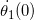
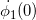
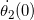
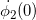

Art from Spherical Pendulum Harmonograph Simulation
This simulates the trajectory of ink dropplets on a canvas produced from the motion of two Spherical
pendulums. The user can adjust the painting time (how long the system is left running over the blank canvas),
and the initial angular speeds for both pendulum 1 and 2 using the sliders to produce their own art.
To learn more about the controls, hover over the information icons throughout the page.
To learn more about the physics behind this, how it was made click the links below. Enjoy!
i
This is the length of time the pendulums paint on the canvas

i
Initial angular veloicty of the elevation angle in system 1

i
Initial angular veloicty of the azimuth angle in system 1

i
Initial angular veloicty of the elevation angle in system 2

i
Initial angular veloicty of the azimuth angle in system 2
Animate in Time
i
When checked, this will animate the paining in time until the maximum time is reached.
To best visualize what is going on here start the time slider at 1 and start this animation
Harmonics Animation
i
When checked this will run through different angular velocity initial conitions, slowing down
around some harmonics that produce a cool painting. This is to help give you an idea of how
to go about finding more for yourself.